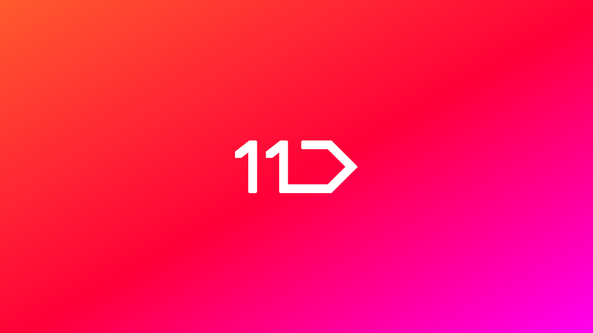
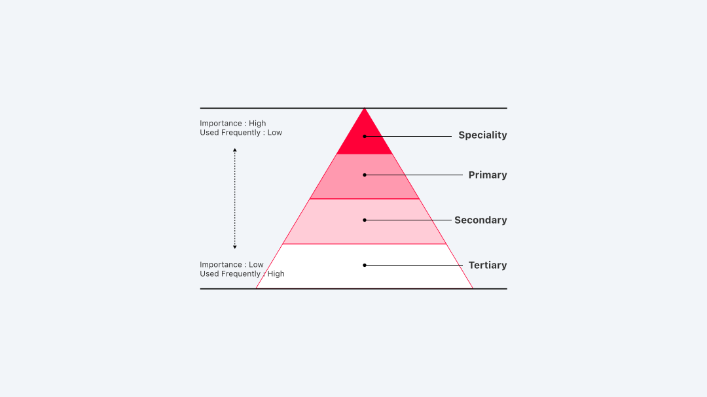

배경 — 11번가는 11번가 디자인 시스템 웹사이트를 통해 '고객 최우선'에 집중하는 디자인 원칙과 철학을 공개했어요 (ZDNet 기사). 2016년 체계화해 내부 운용 중이던 디자인 시스템을 토대로 제작된 이 사이트는, 고객에게 최적화된 쇼핑 환경 제공을 위해 적용해 온 원칙들을 한 곳에서 볼 수 있게 해요. 국가표준 '한국형 웹 콘텐츠 접근성 지침'에 따라 저시력·노안 사용자에게 편리한 환경을 구현하며, 주요 버튼(구매하기 등)의 콘텐츠·배경 명도 대비를 3:1~4.5:1 이상으로 유지해요. A/B 테스트를 활용해 홈·검색 결과·결제 화면 등 각 요소를 효율적 위치에 배치하고, 직관성(가독성 높은 아이콘)·편의성(쉬운 탐색 라벨)·심미성(여백·간격)을 바탕으로 고객 경험을 지속 보완해요.

Philosophy — "11STREET Base on Universal"을 핵심 철학으로 삼아 Universal·Intuitive·Customer·Data·Interaction의 11번가 가치를 문장으로 정의했어요. 디자이너·개발자·기획자가 공유하는 디자인 철학을 널리 알리기 위해 사이트를 구축했고, 브랜드·제품·서비스 전반의 일관된 표현을 목표로 해요. 로고는 직사각형 기둥 모양의 11과 원·사각형·삼각형을 결합한 Street Sign 형태로, 오프라인 거리를 연상시키며 젤리처럼 미묘히 움직이는 반복 애니메이션이 특징이에요. 국문 "11번가", 영문 "11STREET"로 표기하며 변형을 금지해요.
Brand Foundation — Brand 탭은 Principle, Logo, Font로 구성돼요. Principle에서 11번가가 추구하는 가치를 확인할 수 있고, Logo에서는 다양한 환경의 사용 규칙·여백·커닝 상세 수치를 제공해요. Font의 11STREET Gothic은 Light·Regular·Bold 3가지 굵기로, 가격·특정 컴포넌트에 한정 사용되며 인쇄용·스크린용 로고 다운로드를 지원해요. Foundation 탭은 Accessibility, Color, Grid, Iconography, Spacing, Typography를 담아요. 브랜드 컬러의 RGB·HEX와 주색·보조색·서비스별 컬러, 8pt 베이스 스페이싱, 4단 구조 그리드, 24pt 베이스 둥근 아이콘 가이드라인을 정의해요. 프로덕트에서는 Noto Sans CJK KR(Android)·Apple SD Gothic Neo(iOS)를 사용하며, 본문 14pt, iOS·모바일 웹은 1pt 크게, 권장 최대 28px·최소 11px를 적용해요. 접근성 대비·글쓰기·터치 영역 가이드라인도 포함돼 있어요.

Components — Accordion, Badge, Button, Checkbox, Chip, Navigation, Overflow menu, Tab 등 프로덕트 핵심 요소를 상세 가이드해요. Button은 Specialty·Primary·Secondary·Tertiary 4가지 타입으로, 사용자 작업 수행의 주요 인터페이스이며 Normal·Pressed·Disabled 상태를 정의해요. Chip은 정보·선택·필터링·액션 유도, Navigation은 탐색과 현재 위치 인지, Tab은 콘텐츠 그룹화와 섹션 이동을 지원해요. 각 컴포넌트의 기능·기본 상태·구성 요소·조건별 상태 변화를 표로 정리하고, 레이아웃·상호작용 규칙·배치 시 간격을 안내하며, 중요도 4단계로 상황별 적용 가이드를 제공해요. 신규 스타트업·중소 업체가 플랫폼 구축·개선 시 참고할 수 있는 세부 가이드라인으로 활용돼요.